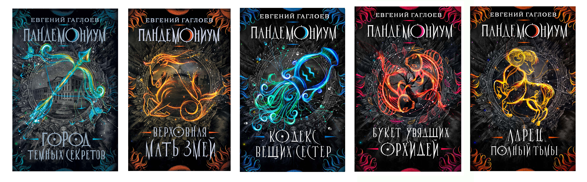

И так я закончел на том что произашло с Тимофеем в академии и каких врагов он там нашёл.И я забыл сказать что у Тимофея был друг и его звали Димка.И для начала скажу что в этой 1 книге была 1 любовь,а ещё убийства,и раследование,а какже без него?А врагов у Тимофея было много:ведьма Саяна и её демонический кот(но это не точно что она враг),Мастер Игрушек,ещё ведьма Ирма морозова,и другие.
А сейчас я вам покажу в каком порядке вы должны читать эти книги(но там всего первые 5 книг).
 (чтобы вернутся обратно)нажми сюда.Автар сайта Богданов Кирилл😎🐱👤.